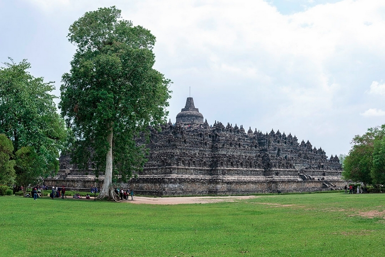
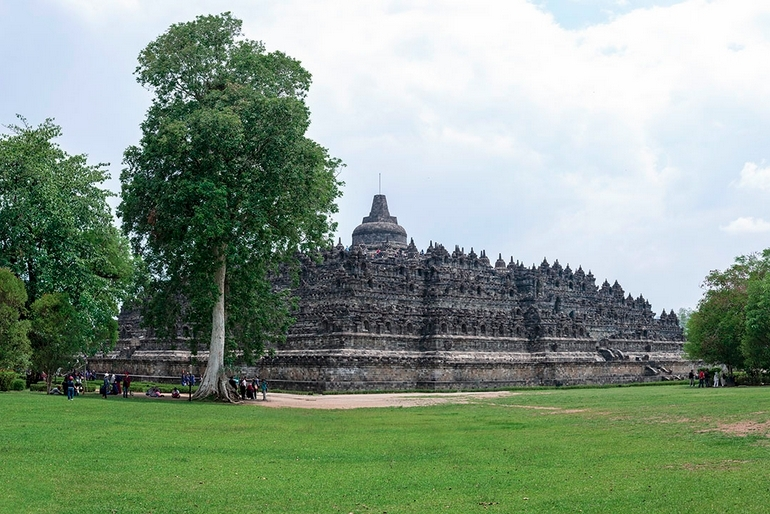
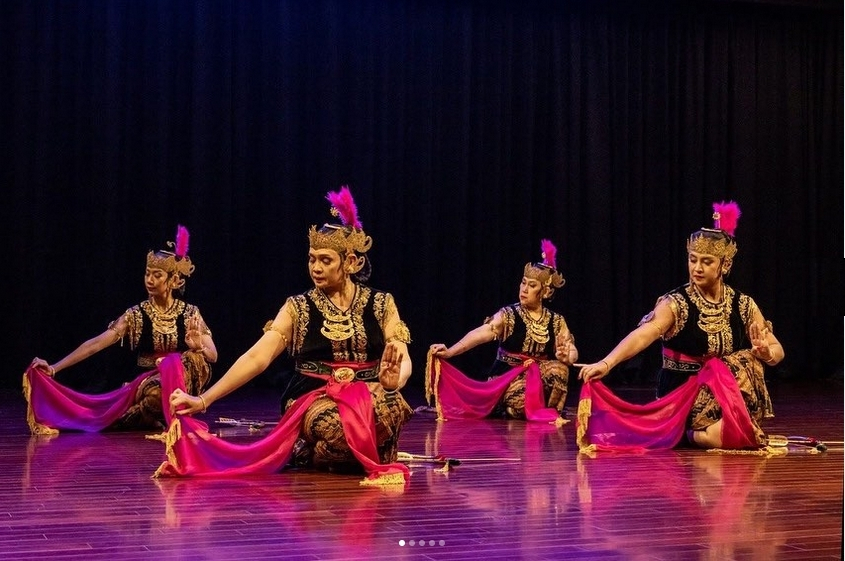
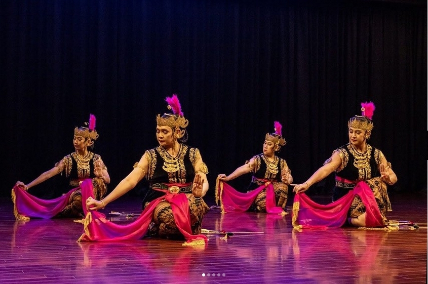

🚧 This site is currently under construction. Content is being updated regularly. Stay tuned!
Welcome to O-COCOSDA 2025!
The 28th International Conference of Oriental COCOSDA will be held in person from November 11-13, 2025, in Yogyakarta, Indonesia, and will be hosted by Royal Ambarrukmo Yogyakarta.
We strongly encourage attendees to join physically to fully engage with and experience the event.
About Oriental COCOSDA
Oriental COCOSDA (O-COCOSDA) is the Oriental branch of COCOSDA, which stands for the International Committee for the Coordination and Standardisation of Speech Databases and Assessment Techniques. Established in 1997, its primary goal is to foster idea exchange, share insights, and discuss regional matters related to the creation, use, and distribution of spoken language corpora for Oriental languages. Additionally, O-COCOSDA focuses on assessing speech recognition and synthesis systems while promoting speech research in Oriental languages.
About the Conference
The annual Oriental COCOSDA International Conference is the flagship event of O-COCOSDA.
The first preparatory meeting took place in Hong Kong in 1997, and since then, 27 workshops have been hosted in various countries, including Japan, Taiwan, China, Korea, Thailand, Singapore, India, Indonesia, Malaysia, Vietnam, Nepal, Macau, Myanmar, and the Philippines. This year, the 28th edition of the conference returns to Indonesia, specifically Yogyakarta, with Gadjah Mada University as the host.
Invitation to Participate
The O-COCOSDA 2025 organizing committee invites researchers, practitioners, industry partners, and sponsors to take part in this conference. The event serves as a platform for international collaboration in the development of speech corpora and the coordination of evaluation methods for speech input/output systems in both academic and industrial settings. Following 26 successful editions, this conference continues to explore topics related to database development and assessment methodologies.
We truly appreciate your support and look forward to welcoming you to the conference. Stay safe and healthy!
In-Person Attendance and Alternative Arrangements
We are pleased to announce that the conference will be held in person. To gain the most from the event, we highly encourage physical attendance. However, if you face specific challenges, such as visa application difficulties, please reach out to the organizers to discuss possible alternative arrangements.
&nosb
Organizers
🎙️ Convenor
🧭 Steering Committee
🏅 Honorary Chair
👤 General Chair
📑 Program Chair
🖨️ Publication Chair
🏢 Local Organizing Committee
🛠️ Technical Support Chair
📝 Registration Chairs
🎉 Social & Nrtworking Events Chairs
🔬 Scientific Committee
🧾 Reviewers
 


 
